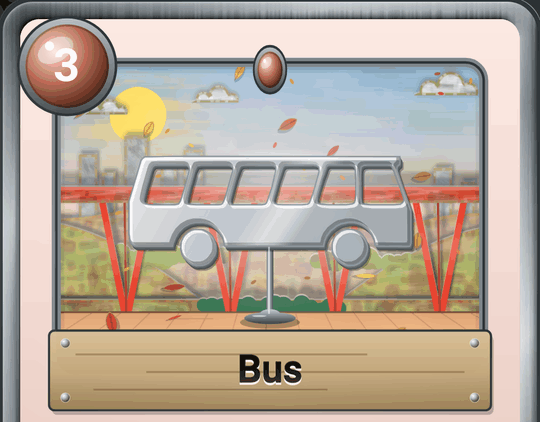
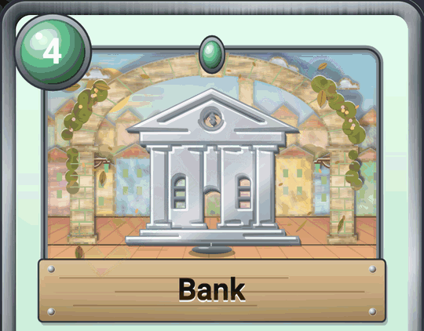

As suas cartas ganham vida. E amanhã em cima da mesa?
Este mês, as cartas da aplicação foram completamente repintadas, as palavras do dia a dia têm o seu próprio álbum, e temos uma pergunta para si: que tal um verdadeiro jogo de cartas em luxemburguês?
Cartas pintadas à mão… ou quase
Cada carta parece agora um pequeno teatro de papel. O céu, as nuvens, as colinas, a cidade ao longe: tudo é recortado em cartão e pintado a guache, com cores vivas. Incline o telemóvel e cada peça do cenário desliza ao seu ritmo, como se estivesse a olhar por uma janela. As nuvens atravessam o céu, as folhas caem no outono.

O desenho da palavra ocupa agora toda a janela. O gato, o autocarro, a casa veem-se ao primeiro olhar, mesmo em ponto pequeno no álbum. E há um novo lugar para descobrir: o Breedewee, com as cores do Grund.
As palavras do dia a dia, página a página
Acabou de chegar ao Luxemburgo, ajuda os seus filhos com a escola ou quer finalmente arriscar algumas frases? O álbum tem agora uma série «Nível A1»: as primeiras palavras a conhecer, arrumadas por tema, como a família, a casa ou as compras.
- Uma casa vazia mostra o significado da palavra a encontrar: cabe-lhe a si ganhá-la a jogar.
- As palavras essenciais do dia a dia têm todas a sua carta.
- As cartas de números mostram o algarismo em grande: «zweeavéierzeg» é 42.


E se as cartas saíssem do telemóvel?
Imaginamos um verdadeiro jogo de cartas em luxemburguês, o Wuertduell, para jogar a dois, em família ou na escola, para aprender a língua sem dar por isso. Ainda nada está decidido: nem a data, nem o preço. Antes de ir mais longe, queremos saber se a ideia lhe agrada.
Duas maneiras de jogar
- A Batalha das palavras, a partir dos 6 anos: cada um vira uma carta e lê a palavra em voz alta, a palavra mais comprida ganha. Aprende-se a jogar.
- O Wuertduell, a partir dos 8 anos: um verdadeiro duelo em que se escolhem as cartas e a estratégia. Ler as regras (em francês).
Caixas para colecionar

Cada caixa poria frente a frente duas famílias de palavras, por exemplo:
Cada caixa poderia jogar-se sozinha, logo que se abre, ou com as outras. Quanto mais rara for uma carta, mais precioso é o seu quadro. E um código na caixa acrescentaria as suas cartas ao álbum da aplicação: a coleção continuaria no telemóvel.


Este jogo despertaria o seu interesse?
Basta um clique. Se tiver mais um minuto, seguem-se três perguntas curtas, uma delas sobre o preço que lhe pareceria justo. Não é pedido nenhum endereço de e-mail.
Mais legível para todos
Os textos a laranja ou a verde, por vezes difíceis de ler, foram corrigidos. A aplicação lê-se melhor, em pleno sol como ao fim do dia.
E para os curiosos…
O nosso laboratório está cheio de experiências. São ideias ainda em construção, que pode experimentar antes de toda a gente:
- Quem disse o quê? Envia a gravação de uma conversa em luxemburguês. O texto aparece, com o nome de cada pessoa que fala.
- Legendas em direto: alguém fala luxemburguês e o texto aparece no ecrã à medida que fala, com a tradução em francês logo por baixo.
- Uma aplicação para as suas reuniões: ouve a reunião, legenda cada frase e propõe-lhe depois uma ata pronta.
Estas experiências ainda não estão acabadas, e é justamente por isso que são divertidas de experimentar. As suas opiniões ajudam-nos a melhorá-las.
E um regalo para os olhos
Uma mesma ruela, quatro horas do dia. A carta mais comum passa-se de manhã, a mais rara em plena noite, sob um desenho dourado.

Fala-o. Agora, escreve-o.
Atualizar no Google Play